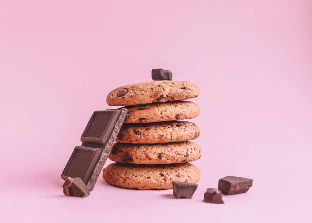

Chocolate Chip Cookies

Chocolate Chip Cookies
Take a break from the constant browser cookies pop-ups with these delicious chocolate chip cookies
You will need...
- 1 cup unsalted butter
- 3/4 spoon kosher salt
- 1/2 spoon baking soda
- 2 1/2 cup all-purpose flour
- 1 cup packed dark brown sugar
- 1/2 cup granulated sugar
- 1 teaspoon baking powder
- 2 large eggs
- 3/4 cup chocolate chips
- 1 chopped chocolate bar
- 2 teaspoons pure vanilla extract
- 1/2 teaspoon flaky sea salt
Directions
- Melt butter in a small saucepan over medium-low. Cook, stirring occasionally, until butter starts to foam and turn brown, about 10 minutes. Immediately pour into a heatproof glass bowl; cover and chill until solidified, about 1 hour. (For quicker cooling, place in a freezer-proof bowl, and freeze about 30 minutes.)
- Meanwhile, preheat oven to 350°F. Line 3 large baking sheets with parchment paper, and set aside. Sift together flour, baking powder, kosher salt, and baking soda in a medium bowl, and set aside.
- Beat chilled browned butter, brown sugar, and granulated sugar with an electric mixer (if working with a stand mixer, use the paddle attachment) on medium-high speed until light and fluffy, about 3 minutes. Add eggs and vanilla, and beat on medium speed until well combined, about 1 minute. With mixer running on low speed, gradually add flour mixture, beating just until combined, about 1 minute. Fold in chocolate. Using a 3-tablespoon cookie scoop, scoop dough, 2 inches apart, onto prepared baking sheets (do not flatten). Sprinkle with flaky sea salt.
- Place 2 of the baking sheets on separate racks in preheated oven, and bake until edges of cookies are lightly golden and set, 12 to 14 minutes, rotating pans (top to bottom) halfway through bake time. Let cookies cool on pans 10 minutes; transfer to wire racks. Bake remaining baking sheet of cookies until edges are lightly golden and set, 12 to 14 minutes, repeating cooling process. Serve cookies warm, or let cool completely, about 15 minutes
Return to Homepage